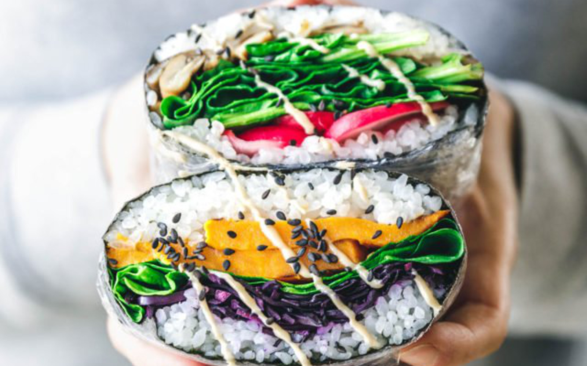

Odin Recipes Exercise
Welcome to my Recipe Page!
Fun and easy recipes for a summery lunch session.

Simple Onigirazu Recipe
A japanese rice dish that is easy to make and easier to pack on the go. Enjoy it will your own ingredients or use our suggestions!

The Perfect Bees Knees
A simple and delicious cocktail. The Bees Knees is a summery twist on the classic Gin Gimlet. Enjoy it on it's own and batch it ahead of time for a citrusy punch for the whole party.

Smokey Kielbasa with Sauerkraut
Smokey kielbasa sausage with a hearty mixture of sauerkraut and sweet potato. Great for large parties and outdoor grilling.